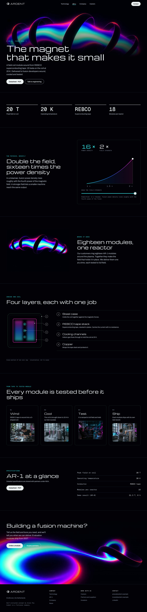
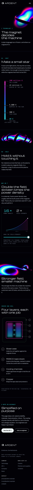
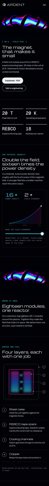
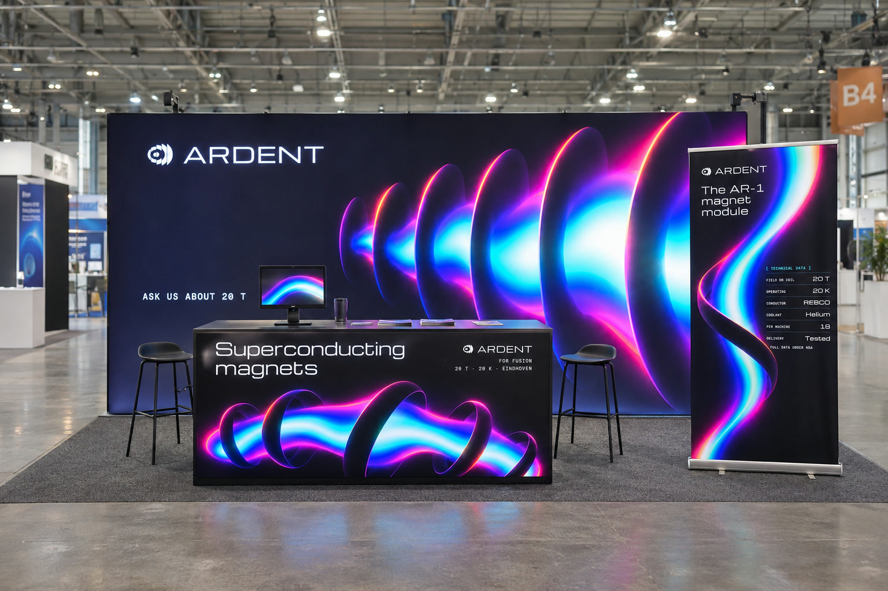
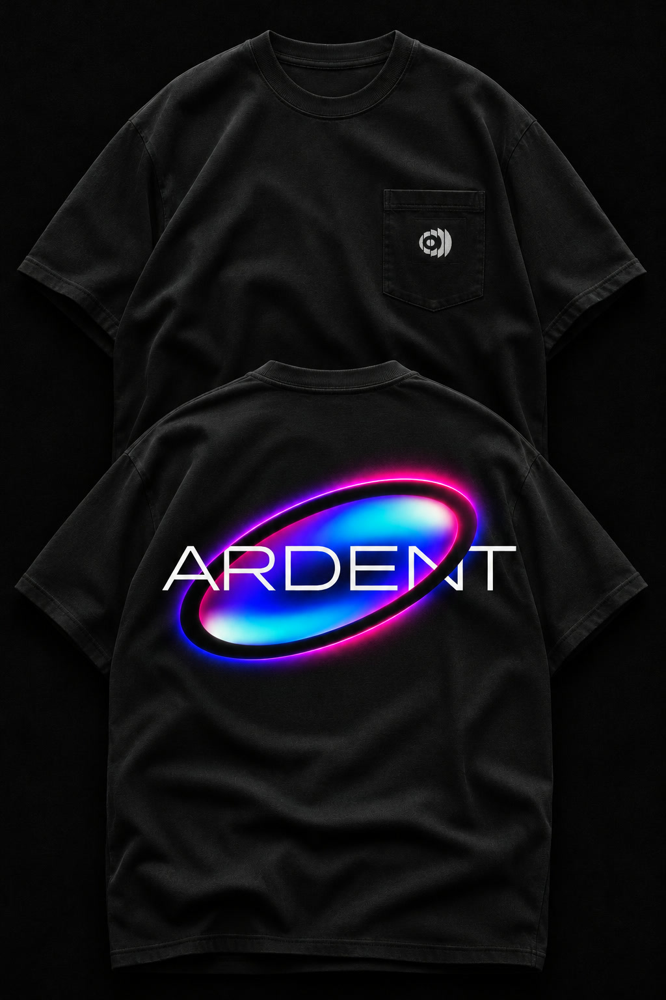

Ardent
Ardent is a fictional company I invented to explore how a deep-tech brand could look and move. It makes superconducting magnets for fusion developers. I designed its website, its social campaign and its stand for an energy expo.
- Project
- Self-initiated concept
- Role
- Web design · motion · campaign
- Scope
- 5-page site · social · expo stand and swag
- Year
- 2026
The Ardent homepage, recorded in the browser
The brief
Fusion developers need very strong magnets to hold their plasma. Ardent designs, winds and tests those magnets. It doesn't build reactors.
The company is made up. The science is real: every technical claim on the site and in the posts is a well-known fact about high-temperature superconducting magnets, like 20 tesla on the coil at 20 kelvin.
One visual rule runs through everything: the glow is always held by something black, the way a magnet holds a plasma.
Website
Five pages, written for investors first and future hires second: home, technology, the AR-1 module, the company and careers. Each shape enters coast to coast, with the text on its dark side. Between them, animated diagrams explain the product in plain numbers.
Scroll inside the frames.



Social campaign
The website's diagrams became animated LinkedIn posts. One idea per post, one number to remember, on the same grid every time.
Trade show
A 6 × 2.5 m stand for an energy expo. Each panel gets one shape that fits its proportions: the long held ring across the back wall, the energy line down the roll-up, with the specs in the fold beside it. The headline sits above head height so it reads from across the hall.
The swag uses the same rule at small scale: a tote covered in the sticker set, and a shirt with the wordmark held behind a glowing ring.



How it was made
I designed the layouts, diagrams, posts and every page by hand. AI tools made the raw imagery, which I directed and then composed into the system.
- ShapesGenerated as stills, then animated with Kling
- MockupsBooth, shirt and tote placed by ChatGPT from my flat designs
- Site and postsBuilt in HTML and CSS, posts rendered from the same code